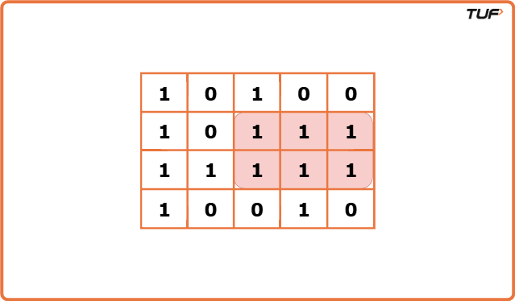
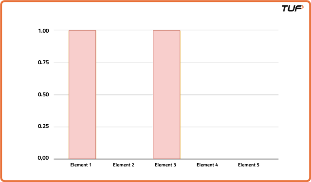
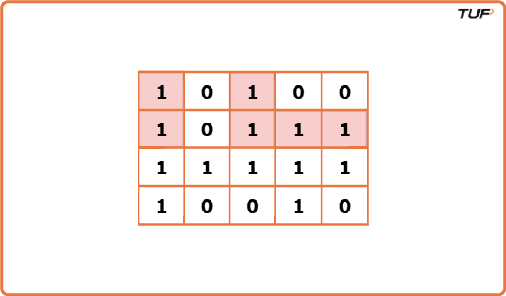

Output: 6Explanation: The highlighted part depicts the rectangle with the largest area i.e. 6

Input: matrix = [[1]]Output: 1Explanation: In this case, there is only one rectangle with area 1.
Disclaimer:
Here is the practice link to help you assess your knowledge better.
It's highly recommend trying to
solve it before looking at the solution.
Approach
Algorithm
In the article, Area of largest rectangle in Histogram, we have learned how to figure out the area of the largest rectangle in a given histogram. Here, in order to solve this problem, we are going to use a similar approach. Consider the following example:
If we carefully observe, we can convert each row of the given matrix into a histogram. Let’s try it out with the first row: We can consider the first and third columns to be rectangles with height 1 and the rest to be rectangles with height 0. The histogram will look like the following: [1, 0, 1, 0, 0]

Similarly, if we try for the second row, we can observe the following: [2, 0, 2, 1, 1]

The first and third columns represent rectangles of height 2, the second column represents a rectangle of height 0 and the fourth and fifth columns represent rectangles of height 1. For the third row, it will be like [3, 1, 3, 2, 2] and for the fourth, it will be [4, 0, 0, 3, 0].
Similarly, following the same process, we can convert every row of any matrix into a histogram. Now, if we pass each histogram(i.e. Each row) to the function used in finding the Area of the largest rectangle in the Histogram, it will give us the maximum area for each histogram. Among all the answers to the histograms, we will consider the maximum one.
Create an array to store heights of histogram bars, one for each column in the matrix.
Traverse the matrix row by row and for each cell in the row:
If the value is '1', increase the height at that column by 1.
If the value is '0', reset the height at that column to 0.
After updating the histogram for the current row, calculate the largest rectangle area in that histogram.
Keep track of the maximum area seen so far across all rows. After processing all rows, the stored maximum will be the area of the largest rectangle consisting of only 1s.
Code
#include <bits/stdc++.h>
using namespace std;
// Class containing the solution functions
class Solution {
public:
// Function to calculate largest rectangle area in a histogram
int largestRectangleArea(vector<int>& heights) {
// Stack to store indices of histogram bars
stack<int> st;
// Variable to store the max area
int maxArea = 0;
// Add a sentinel zero height at the end
heights.push_back(0);
// Iterate through all bars
for (int i = 0; i < heights.size(); i++) {
// While current bar is smaller than the bar at stack top
while (!st.empty() && heights[i] < heights[st.top()]) {
// Pop the top height
int height = heights[st.top()];
st.pop();
// Calculate width
int width = st.empty() ? i : i - st.top() - 1;
// Update max area
maxArea = max(maxArea, height * width);
}
// Push current index
st.push(i);
}
return maxArea;
}
// Function to find maximal rectangle in binary matrix
int maximalRectangle(vector<vector<char>>& matrix) {
// Return 0 if matrix is empty
if (matrix.empty()) return 0;
// Get number of columns
int m = matrix[0].size();
// Height array to build histogram row-wise
vector<int> height(m, 0);
// Variable to track max rectangle area
int maxArea = 0;
// Traverse each row of the matrix
for (auto& row : matrix) {
// Update histogram based on current row
for (int i = 0; i < m; i++) {
if (row[i] == '1') height[i]++;
else height[i] = 0;
}
// Compute area for this histogram
maxArea = max(maxArea, largestRectangleArea(height));
}
return maxArea;
}
};
// Main driver function
int main() {
// Sample matrix input
vector<vector<char>> matrix = {
{'1','0','1','0','0'},
{'1','0','1','1','1'},
{'1','1','1','1','1'},
{'1','0','0','1','0'}
};
Solution sol;
// Call the function and print result
cout << sol.maximalRectangle(matrix) << endl;
return 0;
}
import java.util.*;
// Solution class containing all methods
class Solution {
// Function to calculate largest rectangle area in histogram
public int largestRectangleArea(int[] heights) {
// Stack to store indices
Stack<Integer> stack = new Stack<>();
// Variable to store max area
int maxArea = 0;
// Append a sentinel height
int[] newHeights = Arrays.copyOf(heights, heights.length + 1);
// Loop over bars
for (int i = 0; i < newHeights.length; i++) {
// While current bar is less than stack top
while (!stack.isEmpty() && newHeights[i] < newHeights[stack.peek()]) {
// Pop and calculate area
int height = newHeights[stack.pop()];
int width = stack.isEmpty() ? i : i - stack.peek() - 1;
maxArea = Math.max(maxArea, height * width);
}
// Push current index
stack.push(i);
}
return maxArea;
}
// Function to find the maximal rectangle in binary matrix
public int maximalRectangle(char[][] matrix) {
// Return 0 if matrix is empty
if (matrix.length == 0) return 0;
// Column count
int m = matrix[0].length;
// Histogram array
int[] height = new int[m];
// Variable to track max area
int maxArea = 0;
// Iterate each row
for (char[] row : matrix) {
// Update histogram
for (int i = 0; i < m; i++) {
if (row[i] == '1') height[i]++;
else height[i] = 0;
}
// Calculate max area
maxArea = Math.max(maxArea, largestRectangleArea(height));
}
return maxArea;
}
}
// Main class to run the code
public class Main {
public static void main(String[] args) {
// Sample matrix input
char[][] matrix = {
{'1','0','1','0','0'},
{'1','0','1','1','1'},
{'1','1','1','1','1'},
{'1','0','0','1','0'}
};
Solution sol = new Solution();
// Call the function and print result
System.out.println(sol.maximalRectangle(matrix));
}
}
# Solution class containing both functions
class Solution:
# Function to calculate largest rectangle area in histogram
def largestRectangleArea(self, heights):
# Add a sentinel bar
heights.append(0)
# Stack for indices
stack = []
max_area = 0
# Traverse through histogram bars
for i in range(len(heights)):
# Pop and calculate while current is smaller
while stack and heights[i] < heights[stack[-1]]:
height = heights[stack.pop()]
width = i if not stack else i - stack[-1] - 1
max_area = max(max_area, height * width)
# Push current index
stack.append(i)
return max_area
# Function to find the maximal rectangle in binary matrix
def maximalRectangle(self, matrix):
# Return 0 if matrix is empty
if not matrix: return 0
# Get column count
m = len(matrix[0])
# Initialize histogram
height = [0] * m
max_area = 0
# Traverse each row
for row in matrix:
# Update histogram
for i in range(m):
if row[i] == '1':
height[i] += 1
else:
height[i] = 0
# Update max area
max_area = max(max_area, self.largestRectangleArea(height))
return max_area
# Driver code
if __name__ == "__main__":
# Sample matrix
matrix = [
['1','0','1','0','0'],
['1','0','1','1','1'],
['1','1','1','1','1'],
['1','0','0','1','0']
]
sol = Solution()
# Print result
print(sol.maximalRectangle(matrix))
// Solution class with both functions
class Solution {
// Function to compute largest rectangle in histogram
largestRectangleArea(heights) {
// Add a sentinel bar
heights.push(0);
// Stack for indices
const stack = [];
let maxArea = 0;
// Traverse histogram
for (let i = 0; i < heights.length; i++) {
// Pop and calculate area
while (stack.length && heights[i] < heights[stack[stack.length - 1]]) {
const height = heights[stack.pop()];
const width = stack.length === 0 ? i : i - stack[stack.length - 1] - 1;
maxArea = Math.max(maxArea, height * width);
}
// Push current index
stack.push(i);
}
return maxArea;
}
// Function to compute maximal rectangle in binary matrix
maximalRectangle(matrix) {
// Return 0 for empty matrix
if (matrix.length === 0) return 0;
const m = matrix[0].length;
const height = new Array(m).fill(0);
let maxArea = 0;
// Traverse each row
for (let row of matrix) {
// Update histogram
for (let i = 0; i < m; i++) {
if (row[i] === '1') height[i]++;
else height[i] = 0;
}
// Update max area
maxArea = Math.max(maxArea, this.largestRectangleArea([...height]));
}
return maxArea;
}
}
// Sample usage
const matrix = [
['1','0','1','0','0'],
['1','0','1','1','1'],
['1','1','1','1','1'],
['1','0','0','1','0']
];
const sol = new Solution();
console.log(sol.maximalRectangle(matrix));
Complexity Analysis
Time Complexity: O(N*(M+M)), where N = total no. of rows and M = total no. of columns. Space Complexity: O(M), used for storing heights in array and stack.